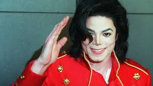
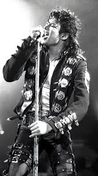
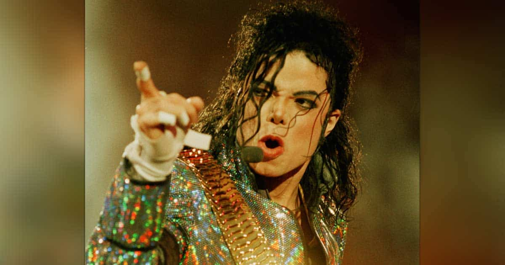

Michael Jackson





"KING OF POP"
Michael Joseph Jackson (August 29, 1958 – June 25, 2009) was an American singer, songwriter and dancer. Dubbed the "King of Pop", he is regarded as one of the most significant cultural figures of the 20th century. Over a four-decade career, his contributions to music, dance and fashion, along with his publicized personal life, made him a global figure in popular culture. Jackson influenced artists across many music genres; through stage and video performances, he popularized complicated dance moves such as the moonwalk, to which he gave the name, as well as the robot. He is the most awarded individual music artist in history.